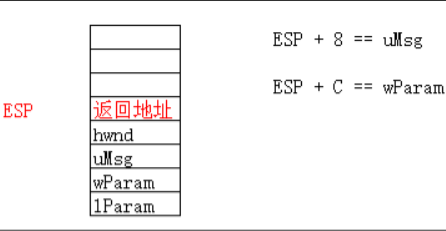
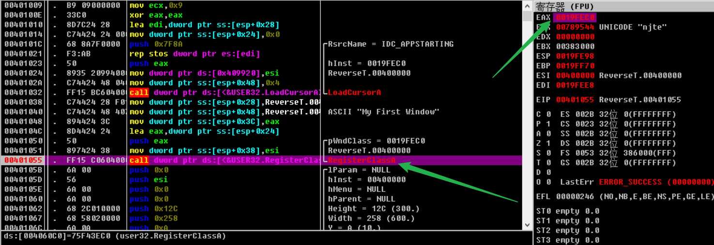
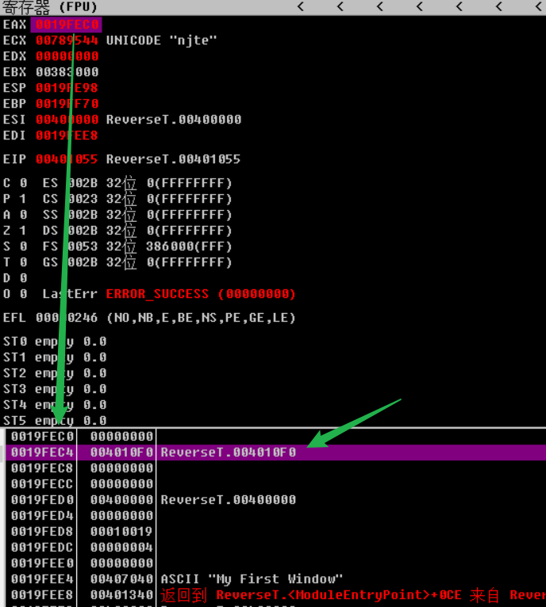
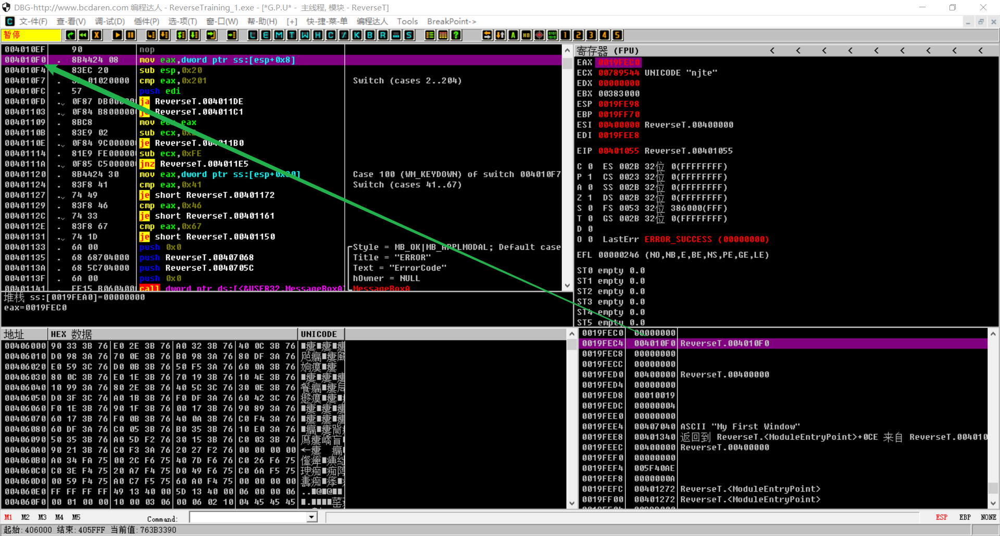
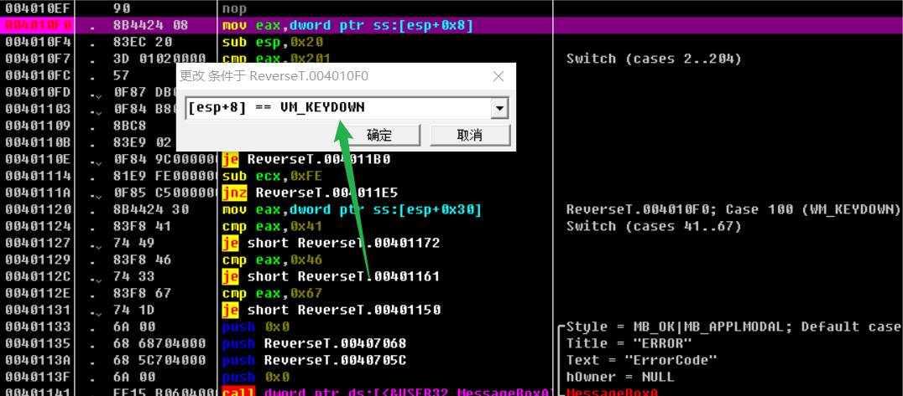

# 消息堆栈
# 回调函数的结构
LRESULT CALLBACK WindowProc( | |
IN HWND hwnd, | |
IN UINT uMsg, | |
IN WPARAM wParam, | |
IN LPARAM lParam | |
); |
# 回调函数的堆栈

# Win32 应用程序入口识别
思路：根据 WinMain 的四个参数，由调用顺序，知道最后压栈的是 hInstance 句柄（也就是 WinMain 函数的第一个参数，其值等于 ImageBase），根据反汇编，则判断压栈参数是 GetModuleHandle 函数的返回值，即可找到 Win32 应用入口。
0040131F |. F645 D0 01 test byte ptr ss:[ebp-0x30],0x1 | |
00401323 |. 74 06 je short ReverseT.0040132B | |
00401325 |. 0FB745 D4 movzx eax,word ptr ss:[ebp-0x2C] | |
00401329 |. EB 03 jmp short ReverseT.0040132E | |
0040132B |> 6A 0A push 0xA | |
0040132D |. 58 pop eax ; kernel32.763AFA29 | |
0040132E |> 50 push eax | |
0040132F |. FF75 9C push [local.25] | |
00401332 |. 56 push esi ; ReverseT.<ModuleEntryPoint> | |
00401333 |. 56 push esi ; /pModule = "U 嬱 jh 郹 @" | |
00401334 |. FF15 2C604000 call dword ptr ds:[<&KERNEL32.GetModuleH>; \GetModuleHandleA | |
0040133A |. 50 push eax | |
0040133B |. E8 C0FCFFFF call ReverseT.00401000 ; |
这是我在 OD 中扣出来的一部分反汇编，我们可以很轻松的判断出：
00401334 |. FF15 2C604000 call dword ptr ds:[<&KERNEL32.GetModuleH>; \GetModuleHandleA | |
0040133A |. 50 push eax | |
0040133B |. E8 C0FCFFFF call ReverseT.00401000 ; WinMain 函数入口 |
# ESP 寻址的特点
程序入口处，esp+4 一般是函数的第一个参数。
ESP 寻址会受到 push 和 pop 的影响。
# 定位窗口的回调函数
思路：根据 RegisterClass() 函数的参数，找到 WNDCLASS 结构体的 lpfnWndProc 参数，从而找到了回调函数的地址。



# 具体事件的处理的定位
思路：在 OD 的设置断点中，右键设置条件断点，可根据相应的条件断下来。

# 定位子窗口的消息时间处理函数
子窗口如：按钮、编辑框……
一个主窗口可能会有很多子窗口，对于它们的消息处理，会用到 WPARAM wParam 与 LPARAM lParam
# 按钮
按钮的本质是窗口
创建按钮
void CreateButton(HWND hwnd) | |
{ | |
HWND hwndPushButton; | |
HWND hwndCheckBox; | |
HWND hwndRadio; | |
hwndPushButton = CreateWindow ( | |
TEXT("button"), | |
TEXT("普通按钮"), | |
//WS_CHILD | WS_VISIBLE | BS_PUSHBUTTON | BS_DEFPUSHBUTTON, | |
WS_CHILD | WS_VISIBLE | BS_PUSHBUTTON | BS_DEFPUSHBUTTON, | |
10, 10, | |
80, 20, | |
hwnd, | |
(HMENU)1001, // 子窗口 ID | |
hAppInstance, | |
NULL); | |
hwndCheckBox = CreateWindow ( | |
TEXT("button"), | |
TEXT("复选框"), | |
//WS_CHILD | WS_VISIBLE | BS_CHECKBOX | BS_AUTOCHECKBOX, | |
WS_CHILD | WS_VISIBLE | BS_CHECKBOX |BS_AUTOCHECKBOX , | |
10, 40, | |
80, 20, | |
hwnd, | |
(HMENU)1002, // 子窗口 ID | |
hAppInstance, | |
NULL); | |
hwndRadio = CreateWindow ( | |
TEXT("button"), | |
TEXT("单选按钮"), | |
//WS_CHILD | WS_VISIBLE | BS_RADIOBUTTON | BS_AUTORADIOBUTTON, | |
WS_CHILD | WS_VISIBLE | BS_RADIOBUTTON , | |
10, 70, | |
80, 20, | |
hwnd, | |
(HMENU)1003, // 子窗口 ID | |
hAppInstance, | |
NULL); | |
} |
# 按钮事件的处理
1、按钮是一种特殊的窗体，并不需要提供单独的窗口回调函数.
2、当按钮有事件产生时，会给父窗口消息处理程序发送一个 WM_COMMAND 消息
按钮 ---------------> 系统提供 WinProc----------------------> 父窗口的 WinProc
--- 单击按钮 转换 WM_COMMAND
代码：
case WM_COMMAND: | |
{ | |
switch(LOWORD(wParam)) | |
{ | |
case 1001: | |
MessageBox(hwnd,"Hello Button 1","Demo",MB_OK); | |
return 0; | |
case 1002: | |
MessageBox(hwnd,"Hello Button 2","Demo",MB_OK); | |
return 0; | |
case 1003: | |
MessageBox(hwnd,"Hello Button 3","Demo",MB_OK); | |
return 0; | |
} | |
return DefWindowProc(hwnd,uMsg,wParam,lParam); | |
} |
# 按钮事件处理逻辑定位
设置条件断点
[ESP+8]==WM_COMMAND && [ESP+0xC]==子窗口ID
总流程大致如上，学会举一反三很重要。
# Reference
https://www.cnblogs.com/flatcc/p/7694208.html